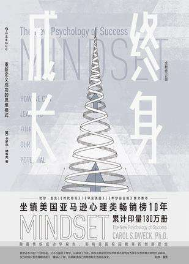

就在前段时间，一则新闻震惊了全国的人，一名中科院博士生被昔日高中同学赴京千里追杀，凶手锒铛入狱后，警方审讯，凶手称两年前同学会上，被害者的一些话，让他两年来过得不舒服。
原来凶手高中毕业考入川大，自己觉得是清华北大的料，便退学复读，次年考入西安交大硕博连读，后沉溺游戏，多科被挂，勉强本科毕业，在重庆游走求职。被害者在同学会上知道后，规劝他，希望他重扬奋斗精神。据凶手的同学讲，很多人将其手机拉黑，都不愿与其来往。被害者一番好意，想拉同学一把，没想到惹来杀身之祸。
这则新闻一出，引发了网络众人的热烈讨论，知乎上基本都在围绕“如何避免生活中的垃圾人”来回答。但我却很难过，因为很少有人去关注凶手的心理。在我看来，凶手在犯罪前就一直是典型的固定思维缺点的受害者，明明手里攥着一副好牌，硬生生被自己打烂了。想要用不断想证明自己的聪明和天赋，但却接受不了失败，觉得失败就是人生中不可饶恕的污点，不会从失败中学习和纠正错误。在经历失败后，固定型思维者尝试修复自己的自尊，就去责备他人或者找借口，把自己失败的责任推到别人的身上。不幸的是，被害者刚好这时充当了他修复自尊的借口。

“固定型思维”这个概念出自心理学博士卡罗尔·德韦克的《终身成长》，与之对应的就是成长型思维。
当然，并不是说拥有固定型思维者就是犯罪的摇篮，只是上述案例中凶手心理十分极端，又刚好命中了固定型思维的N个缺点，本来可以及时识别自己的思维模式，从而杜绝走到如今这一步。
在书中对固定型思维的定义就是
“相信自己的才能是一成不变的，总是急于证明自己的能力，如果不能，就会丧失信心，抱怨不断，对努力持消极态度，对于失败，不会去学习和纠正，反而尝试去修复自己的自尊
而成长型思维则是
“相信自己的才能不是一成不变的。人的基本能力可以通过努力来培养，即使先天才能和资源等方面有不同，也可以通过努力和个人经历来改变和成长”。
这本书的作者卡罗尔.德韦克是斯坦福大学的心理学教授，在《终身成长》中，卡罗尔通过大量的案例，来描述和解释两种不同思维模式的特征、判定自己属于哪种思维模式以及如何更好的应用成长型思维。
核心思想
其实整本书的核心思想就是：人们所采取的观点会对他的生活方式产生深远影响。它可以决定你能否成为你想成为的那个人，以及你能否做好你最看重的事情。
比如成长型思维的人，有一个特殊的才能，就是将人生中的挫折转变成为未来的成功。越在艰难的时候，越能体现出优势，他们想的不是掩饰不足，或沉浸在失败中，而是想要提升自己并坚持不懈，去解决问题。
固定思维者则关心别人如何看待自己，在自己成功后归结于自己固定不变的个人能力比他人强，从而产生一种优越感。但这种优越的自尊心又潜藏着一个问题：
当你成功的时候你是一个比他人强的人，那当你失败了，你会变成什么人？
打个比方，如果说人就像装着水的杯子，固定型思维认为这个杯子里永远只可能有半杯水，这些水倒出来倒出去都只会是原本的水，不会多不会少；成长型思维则认为，杯子里的水多少可以增加和减少，不会一成不变，而且把旧的水倒出去才能将新的水装出来，他们可以随时更换水源，所以若水变质了，他们也不会害怕。
你创造现实
在我看来，思维模式其实是一种信念，信念会影响人的行为。在TED《信念的力量》中，有个结论——从基因的层面描述，信念影响我们的生活，现实是你创造出来的。
人的身体里，基因是无法自我激活或失活，激活基因的是环境中的信号，环境信号能激活“遗传工程基因”（一种对适应性存在，可以随时改变其他基因的基因）来改变基因类型，就像人类有两种程序：生长或者自保。遇到压力会关闭免疫系统，我们的自我保护系统会启动，这个时候细胞不会在生长。
所以，你的态度在控制你的基因的选择性表达。
我们能看到，持有不同思维模式的人，其实就是持有无数个不同的信念，对待事物持有的态度决定了他处理事情的方式和最终的结果。
换句话说，一定程度上，我们也可以从一个人开始的动作，就能看到他的结局。
你是哪种思维？
看这本书的时候，我就一直在想，到底我是固定型思维还是成长型思维呢？
也许在以下几个方面，可以供大家对照自己持有什么样的思维模式。
在关于学习的态度上
固定思维者希望在进行任何学习之前，能力就可以自动展现，如果你有能力，你就是有，如果没有，你就是没有。
在大多数学校里，是以分数高低判断一个学生的能力，经常是一次性定性（比如期末，比如中考、高考），如果一旦一次考得不好，就会被老师、家长贴上“学习不好、能力不行”的标签。所以我们常常看到，一些学生因为一次失败，就认定自己人生彻底完蛋，甚至为此丧失了生活的勇气，选择自杀。事后大多人都以“这孩子心理素质不好”去看待，但这是个思维信念方式的问题，只要改变就不会出现这个问题。
面对失败
固定型思维者不会去从中纠正自己的失败，而是尝试修复自尊，或者以责备他人及找借口的方式去让自己的感觉好一些。不出所料的是成长型思维者会去思考“怎么在下一次做到更好”“这次到底是哪儿做错了”，不会纠结失败这个结局，而是认真去反思过程。
关于抑郁
固定型思维者会反复去想自己遭遇的挫折、失败的结果，认为这些是证明他们无能的证据，会对自己说下否定的结论“看，你就是个笨蛋”“自己果然不适合做这个”。相反，成长型思维者抑郁程度越深，反而越会采取行动来对抗抑郁，下决心更努力地去改变这一切，感觉越糟糕，信心越坚定。
对于努力的看法
固定型思维者认为事情是非此即彼的，即要么有能力，要么你就努力，认为只有无能者才需要努力就是固定型思维模式的一部分，正如他们希望自己一开始某件事就能具有完美完成这件事的能力一样，如果需要付出努力，就证明自己不擅长这件事。
这就是我们经常给自己不做一件事找的理由，“因为我不擅长啊”“肯定是我没有这个天赋，算了不做了”。
关于自信心
成长型思维认为即使认为自己不擅长某件事，也会全心全意投入进去，不一定觉得自己必须对某件事很在行才去做，并享受做这件事情的乐趣。
我们的社会，总是强调人要有自信心，彷佛没有对自己没有自信就是一个缺点或者让人羞愧的事，在成长型思维模式中，人们并不一定时刻都需要自信心。即使对这件事没有信心，也可以投入地去做这件事。
关于对待婚姻的方式
有时候固定型思维者会对伴侣和亲密关系中的问题选择视而不见，这样他们就可以不去面对和解决；逃避不是办法，成长型思维者在面对亲密关系中的矛盾时学习如何回应对方的需求，采取对事情有帮助的行动，而不是和对方生气。
在这个方面，成长型思维给我们提供了很好的解决示例，面对在人际交往中出现的问题，可以先想想是什么地方出了问题，仔细考虑后决定接下来怎么办，而不是逃避和视而不见。
在夸奖孩子的方式上
大多数人觉得对于孩子做出的某项事情结果进行夸奖，就是“赞赏教育”，则完全曲解了夸奖。当孩子考了100分，这时候父母说“你考了一百分，真聪明！真棒”，并不是最好的方式，这种错误的夸奖方式会让孩子们变得过分看重成就，过分依赖夸奖，心理脆弱。当孩子长大，在职场上，他们真正需要的是接受挑战，能够承认并改正错误。正确的夸奖方式可以引领他们努力的工作，并让他们变得更加坚强。
转化思维方式
难道固定型思维就一定不如成长型思维吗？
关于固定型思维和成长型思维，作者卡罗尔也说了，本书只是想通过阐述两种思维模式的不同，让人们知道世界上存在这两种截然不同的思维方式而已。选择一种思维方式，就像进入一个世界，人们可以自由地选择要在哪个世界生活。
固定型思维让人感到真正了解自己永远不变的真实情况，你可以不去做这样那样的事，因为你没有天赋，你也肯定能在这样那样的事情中做成功，因为你确认自己有天赋。
只要在了解每一种思维模式的缺点和优点情况下，人人都可以随时做选择，按需处理，对什么样的事情付出努力并带来改变，这才最有价值。
那么现在你已经知道世界上有这么两种不同的思维方式，并且想要在合适的时候选择成长型思维作为自己的人生指明灯，那么该如何改变思维模式呢？
书中给出了几个步骤：
- 第一步，接受，接受自己拥有一部分固定型思维的事实。
- 第二步，观察，观察模式怎么来的，怎么起作用的。
- 第三步，命名，书中说的是给固定型思维人格出现时命个名，其实就是识别，把固定型思维起作用时的关键事件或象征识别出来。
- 第四步，教育，慢慢转变思维模式。
“自证预言”
看这本书的时候，我不禁想到一个理论：自证预言。让我用这个理论来解释思维转变的几个步骤。
自证预言，意指人会不自觉的按已知的预言来行事，最终令预言发生。例如若你自认不是读书的材料，那即使有时间也不会用来温习，因为你认为读了也不会懂，结果考试一塌糊涂，然后你对自己说:”果然我不是一个读书的材料!”
这个理论的心理学依据是，当我们渴望某一件好事情发生时，会倾向於找寻符合该期望的正面讯息，而那些正面讯息又诱发我们找寻更多的正面讯息，使我们变得越来越乐观和充满自信，行为上也变得更积极，大大地提升了成功的机会。相反地，如果我们越担心坏事情的发生，便会越留意不利的讯息，不利讯息越多，心情越加焦虑不安，行动消极、被动或过度保护自己，最后更容易地诱发了坏事情的发生。
事实上，这个理论说的就是，你怀有什么样的信念，就会看到什么样的现实。人们通常会不断强化自己所认知的世界。所以有些人的眼里，世界到处都是坏人和对手；而另一些人眼里，世界到处都是好人和家人。
这就是首先，就是你得清楚，我们每个人都有很多很多的信念，有好的，也有不好的。
其次，你要去寻找这些信念的来源，和触发他们的事件。
这些信念的形成不是一蹴而就的，而是通过长时间的、潜移默化地在你大脑里储存加深。一个念头，可能来自小时候或平时的一句话、一个画面、一段字，它会像种子一样，在你的身体里生根发芽，最后你看到它或者压根下意识没注意到它的时候，它就已经深深地扎根在你的信念体系里了。
然后，在这些信念被触发的时候，给这些事件打上标识。
比如当自己出现“我真笨，我什么都完不成”或者“不行，我要看看到底那里出了错，我该怎么改进”这种念头的时候，想一想，是发生了什么让自己有这种想法，自己当时的情绪和身体反应是什么样的？给这类事情打上标签：触发事件。识别出这些念头是属于哪种思维模式，下一次，触发事件再次出现的时候，你就知道，思维模式即将被触发，准备好选择使用哪种思维模式去应对。
最后，如果你识别出来自己即将下意识用上固定型思维，改怎么办？
既然你已经了解每一种思维方式的特征，如果想要转变为成长型思维模式，那就先把自己心里关于固定型思维的信念标签撕掉，按照成长型思维那个世界的规则去行动，按照成长型思维应该有的方式去说话、去做应该做的事情。这样，你会发现慢慢地自己想那个世界靠拢，慢慢地，你活在那种现实中了。